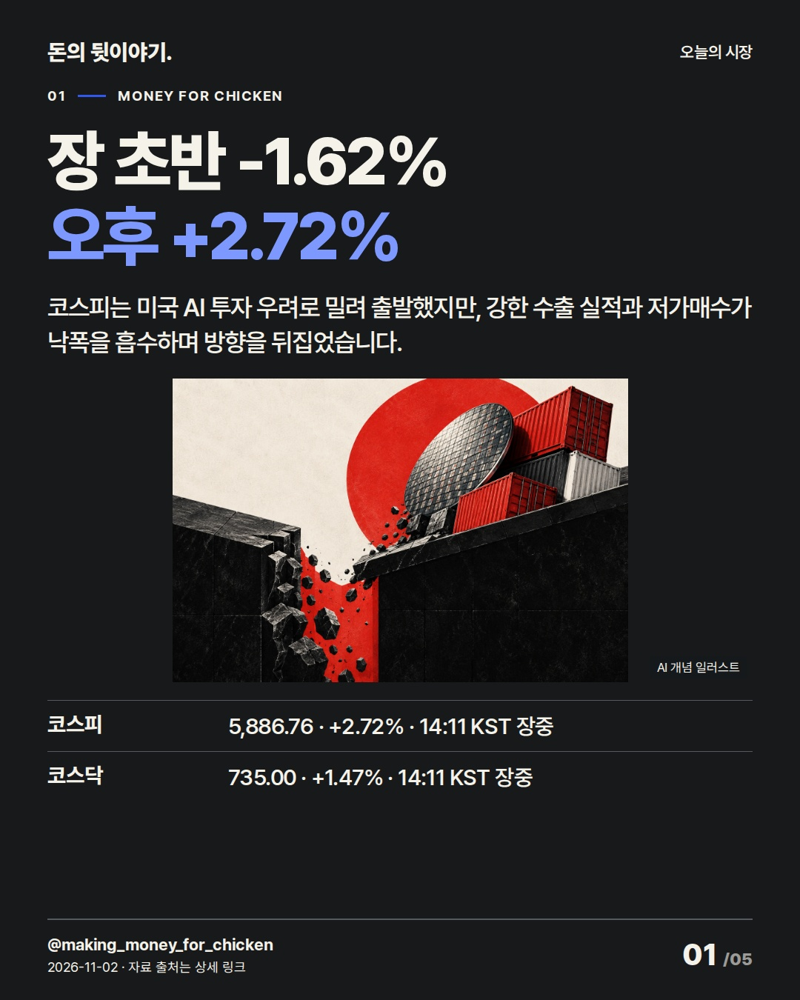
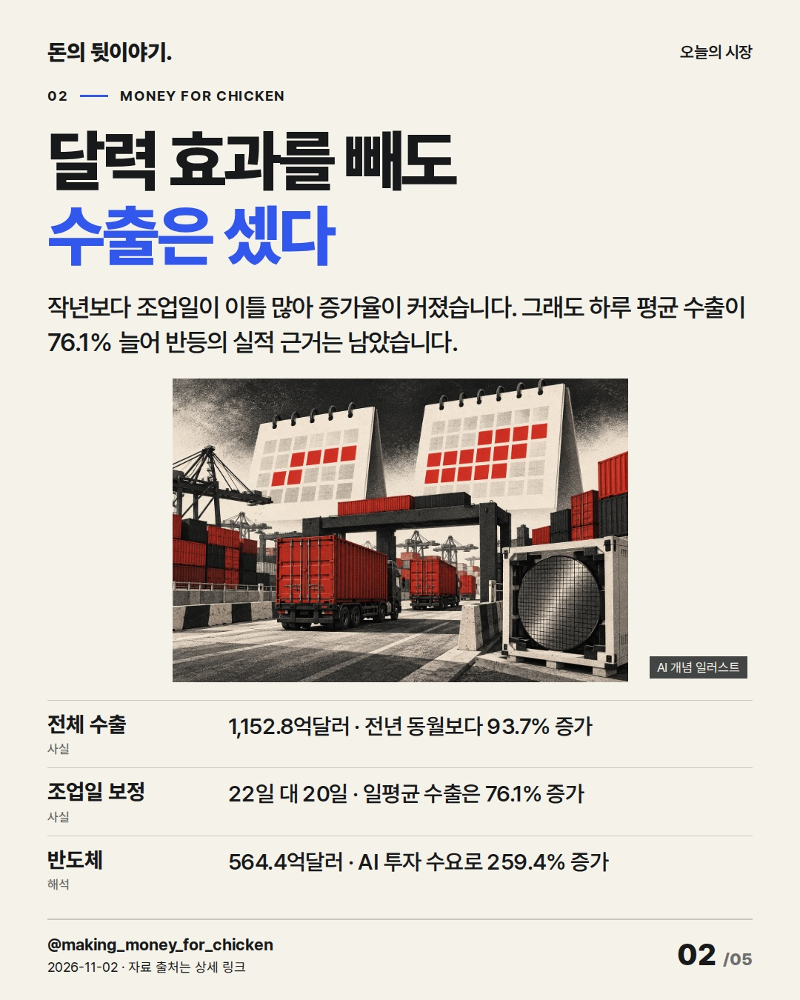
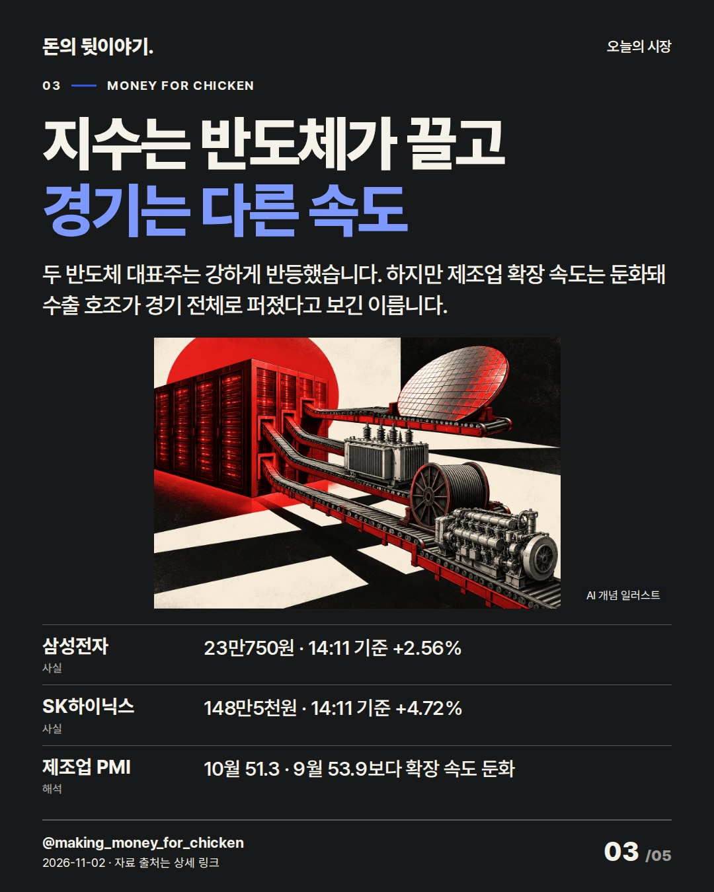
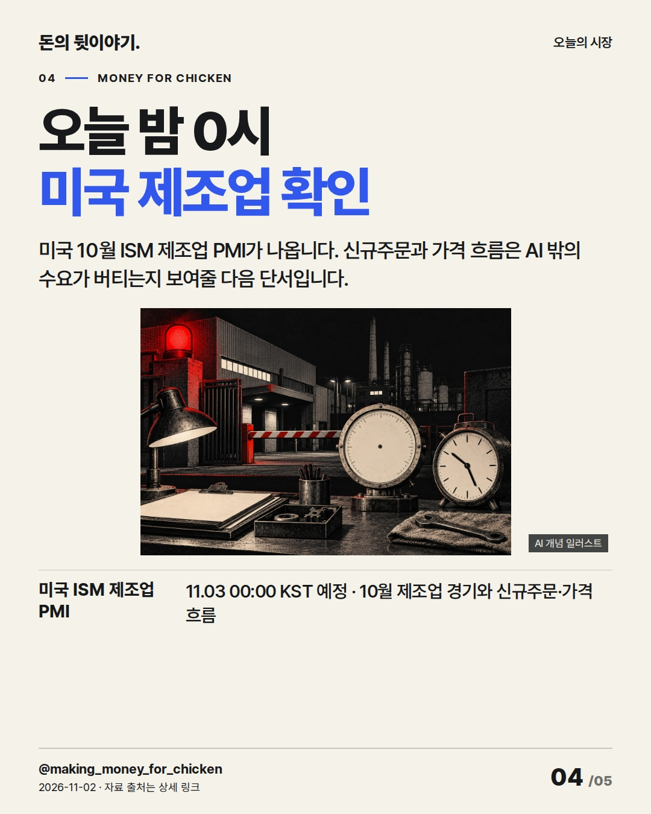
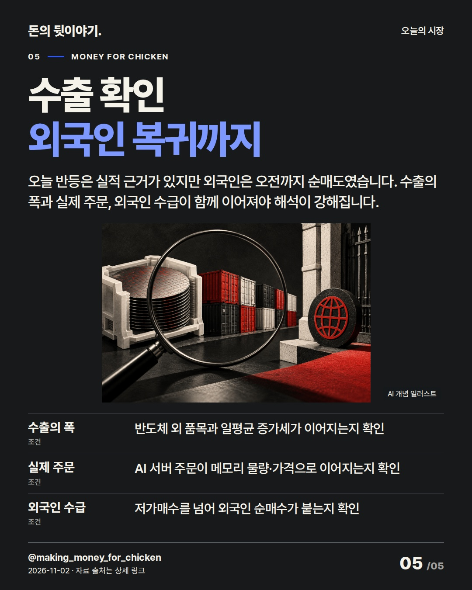

코스피는 1.62% 하락 출발을 2.72% 상승으로 뒤집었습니다. 수출 급증의 달력 효과와 실제 반도체 수요를 나눠 보면 반등의 힘과 남은 조건이 함께 보입니다. #코스피 #반도체 #수출

코스피는 미국 AI 투자 우려로 밀려 출발했지만, 강한 수출 실적과 저가매수가 낙폭을 흡수하며 방향을 뒤집었습니다.
AI 생성 개념 일러스트 · 실제 현장이나 공식 제품 사진이 아닙니다.

작년보다 조업일이 이틀 많아 증가율이 커졌습니다. 그래도 하루 평균 수출이 76.1% 늘어 반등의 실적 근거는 남았습니다.
AI 생성 개념 일러스트 · 실제 현장이나 공식 제품 사진이 아닙니다.

두 반도체 대표주는 강하게 반등했습니다. 하지만 제조업 확장 속도는 둔화돼 수출 호조가 경기 전체로 퍼졌다고 보긴 이릅니다.
AI 생성 개념 일러스트 · 실제 현장이나 공식 제품 사진이 아닙니다.

미국 10월 ISM 제조업 PMI가 나옵니다. 신규주문과 가격 흐름은 AI 밖의 수요가 버티는지 보여줄 다음 단서입니다.
AI 생성 개념 일러스트 · 실제 현장이나 공식 제품 사진이 아닙니다.

오늘 반등은 실적 근거가 있지만 외국인은 오전까지 순매도였습니다. 수출의 폭과 실제 주문, 외국인 수급이 함께 이어져야 해석이 강해집니다.
AI 생성 개념 일러스트 · 실제 현장이나 공식 제품 사진이 아닙니다.
{
"improvement": "최근 5편은 한 기업의 실적·현금 선택이 중심이었고 직전 오후편은 AI 투자 회수를 설명했습니다. 이번에는 코스피의 -1.62% 출발→+2.72% 반등을 수출 +93.7% 한 숫자로 포장하지 않고, 조업일을 뺀 일평균 +76.1%와 반도체 +259.4%로 나눠 설명했습니다.",
"reason": "불스토리 9/22 공식 글 본문 전체·설명 이미지 2장은 전체 수출보다 증가분을 만든 업종과 가격·물량을 나눴습니다. 프리즘 홍춘욱·이지훈 10/29 공식 스크립트 전체는 수출이 고용·내수로 번지는 시차와 장치산업 구조를 설명했습니다. 두 곳의 Instagram 카드는 미열람했고 고유 문구·전망은 가져오지 않았습니다.",
"application": "초안 ‘수출 호조에 코스피 급반등’→퇴고 ‘장 초반 -1.62%, 오후 +2.72%’로 바꿨습니다. 2장에 전체 수출·조업일 보정·반도체 수출을 붙이고, 3장에 삼성전자·SK하이닉스 강세와 제조업 PMI 둔화를 함께 둬 지수 반등과 경기 확산을 구분했습니다.",
"avoided_repetition": "직전 오후편의 빅테크 현금→설비투자→한국 주문 경로는 반복하지 않았고, 오늘 AI 예산안은 장중 반등의 독립 원인으로 단정할 근거가 부족해 뺐습니다. ‘수출 +93.7%, 코스피 급반등’은 달력 효과를 가려 탈락, ‘반도체가 한국장을 구했다’는 인과를 과장해 버렸습니다. 다음 편은 외국인 복귀와 실제 신규 주문을 같은 시각으로 비교합니다. 반응 지표는 미확보입니다."
}투자 참고용 · 매수·매도 권유 아님.